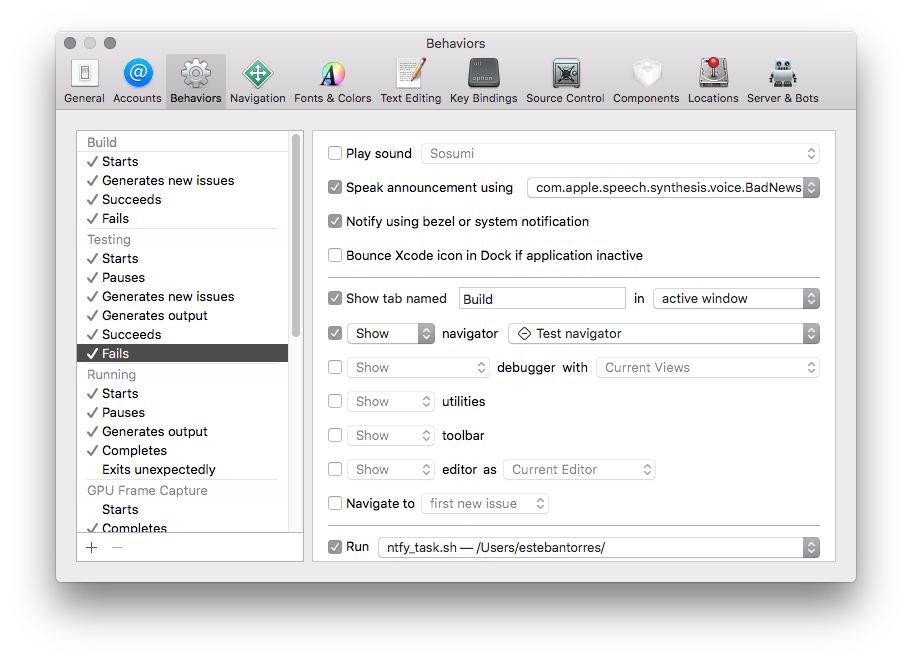
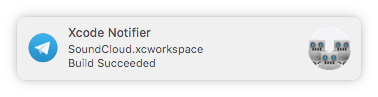

Xcode notifications on your 📱
Since quite some time now I’ve been working on Xcode projects that are pretty big; big enough to take up a considerable amount of time to finish compiling, even worst if you are running the tests and it needs to build EVERYTHING and then run ALL the tests.
I also like to multi-task and do some other stuff while I’m compiling…
For the longest time I thought about creating some sort of service that would let me hook up some push notifications whenever Xcode finished doing X or Y task but never came around actually creating it. Time passed and I basically forgot all about this dream of mine.
That is until today when I found out about ntfy…
ntfy
ntfybrings notification to your shell. It can automatically provide desktop notifications when long running commands finish or it can send push notifications to your phone when a specific command finishes.
TL,DR: ntfy is a python 🐍 tool that sends notifications to different configurable backend services.
TL;DR 2: ntfy is basically the service I wanted to build and never came around to actually making.
Installation
The tool’s README is pretty nicely done and comes with a Quickstart section that describes how to install it; unfortunately for me it didn’t work due to some obscure error:
|
|
Which was easily sortable by running pip3 instead of pip when installing; effectively making it:
|
|
Hooking it into Xcode
Now that the tool was installed on my machine it was just a matter of hooking it into Xcode behaviors (Xcode -> Preferences -> Behaviors)

At the very bottom of the window there’s a Run checkbox where you can choose a script/binary that you want to run whenever a behavior happens.
At first I had 1 script per behavior but then I discovered that there’s an env variable that gets passed that has all the information I needed.
Available variables
There are many variables that get passed to the binary/script; here’s a redacted list of them from my own tests:
|
|
Whenever a behavior gets executed (depending on which one) the script or binary you want to execute gets feed a set of environment variables; one of them being IDEAlertMessage which basically contains the message that Xcode displays (I also believe is the message that gets passed to the notification that macOS renders whenever Xcode starts, ends, fails to build or run tests; etc.)
As you can see the see IDEAlertMessage has everything I needed; is just a matter of calling ntfy with the contents of that variable and the Xcode Workspace and then you are set.
Script
If you don’t want to play around this is the contents of my script:
ntfy.sh
You might have noticed the -b telegram part. This you can check how to configure on ntfy‘s README; if you don’t want to use Telegram you can tweak it to use any of the other supported services.
Result

There are lots of room for improvement here, but this basically satisfy my needs; I can start building and or running my tests; leave to the cafeteria to grab a coffee and know wether or not the build passed or not without having to wait.
Why this?
You might not find this all that useful; and perhaps I won’t either, but only time will tell.
For now I’m quite happy with the results and pretend to take as much advantage as I can.